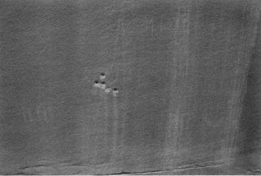

Today's desert traveler must pick his way between the immensity and the fragility. For many of us the refreshment of the waterless has become a necessity, whatever the warring concepts about our impact. Accepting the fact of our flesh bringing down our boots with care, we can still, if briefly, give predictability the slip. For to walk into the desert is to deal one's life a wild card.
Bruce Berger, 1990 The increase in backcountry use in the Escalante has led to unintentional degradation of the land. Our continued and unrestricted use of this land is contingent on each person's commitment to protect the environment. There are a number of things we as individuals can do. None are difficult; none take much effort. The goal is to leave the desert as you found itor better.
The meticulous practice of "leave-no-trace" camping techniques can help spare the land; but this is no longer enough. We must now become our brother's keeper. It is our responsibility to clean up the mess left by others. Leave room in your pack for extra garbage. Spend ten minutes breaking up an old fire ring, blocking offa redundant trail, or restoring an ill-used campsite. Insensitive hikers can no longer be tolerated. It is our obligation to help educate those who do not know and to chastise those who do know but do not care.
Some of the techniques used to minimize impacts on desert lands have changed over the years. Readers of Canyoneering 1 and Canyoneering 2 should read the following section and abide by the changes it makes in earlier practices. All users of such lands should adhere to these concepts and practices.
Please read the following section carefully.
Group size: One of the biggest problems land managers have in the Escalante is overly large hiking groups. Although group size is limited to twelve, a voluntary limit is eight people. If your group is larger than twelve, it must break into two or more smaller groups. The groups must hike and camp at least one-half mile apart.
Bill Wolverton, a backcountry ranger for many years in the Escalante, notes that: "Compliance with the [group size] rule is a joke. Most groups seem to think that camping across the creek, around the bend, or maybe 100 yards apart, is compliance. Very often, the group has one stove or one set of pots, or their meals are packaged together, so they end up together for meals anyway. Sometimes groups even think that filling out two permits is good enough."
Most often, the group-size rule is broken by youth groups. In the past, it has been common to see groups as large as fifty camping in popular canyons such as Coyote Gulch, Harris Wash, and Willow Creek. The aggregate damage by large groups is usually extensive compared to that of smaller groups. Sanitation problems, multiple trails between groups, and excessive noise detract from the wilderness experience of others in the canyons. Leaders of large groups should contact the Interagency Office in Escalante and discuss their plans with the rangers there before heading into the backcountry.
Trash: The most obvious eyesore. Take out more than you bring in. Apple cores, orange peels, banana peels, and nut shells are garbage. Carry them out.
Bodily waste: Solid waste should be disposed of at least 300 feet from any water source or camp area. Avoid water courses. Dig a hole four to six inches deep near vegetation and with maximum exposure to sunlight. The microorganisms associated with the vegetation will speed the breakdown of the waste, as will the heat available from the sun. Do not dispose of waste or urinate in caves or under overhangs.
In the popular canyons it is no longer adequate to burn your toilet paper; you must carry it out. In areas of dense or dry vegetation do not burn your toilet paper; carry it out. Wildfires start quickly and are difficult to extinguish. Plastic bags make carrying out your toilet paper easy and odor free. Grand Canyon backpackers have been carrying out their toilet paper for years. The Interagency Office in Escalante dispenses plastic bags with sanitation instructions to all backcountry users.
The conventional wisdom was that you should not urinate on vegetation. It has been found, however, that there are no impacts from this and that urine is a good fertilizer. The only rule now is to urinate away from water sources.
Washing dishes: Have you ever wondered why some campsites are overrun with mice and others are not? Have you ever had to set up your tent to keep mice from running over your face in the night? Miceand other animalsare attracted to the food scraps campers did not carry out. We used to use gray water holes for dishwater and leftovers; this is no longer acceptable. Instead, pour wastewater through a strainer into a second container. The wastewater can then be broadcast over a wide area away from camp. The dregs from the strainer, and any other leftovers, must be carried out.
Bathing: Water in backcountry Escalante is scarce and should be treated as a treasured commodity. Pothole water should be used only
for cooking and drinking. Other backpackers may be depending on the water. Save your swimming and bathing for the creeks and rivers. Swim in potholes only if there is a substantial flow of water. If you need to lather up, use pots and canteens to carry water well away from the water source. Use only biodegradable soaps; they do not have the perfumes and additives that are damaging to the environment. Never swim until you have washed off your sun-tan lotion.
Indian artifacts and ruins: The relics left behind by Anasazi and Fremont Indians belong to all of us and are protected by law. Archaeological sites are being destroyed at an alarming rate by vandals, pot and artifact hunters, and the uninformed public. The Archeological Resources Protection Act of 1979 provides stiff penalties for those harming archaeological sites. If you witness vandalism to an archaeological site, notify the personnel at the Escalante Interagency Office in Escalante. (See the "Access" chapter for the address.) Information you provide that leads to a conviction may entitle you to a reward.
There are protocols you must follow when visiting Indian sites:
When visiting ruins, view them from a distance. Although a couple of people may not severely impact a site, the aggregate impact of many visitors over a period of years can destroy it. Stay on established paths, never enter a ruin, do not climb on the walls or roofs of a ruin, and do not touch the walls of a ruin.
Do not camp or build fires in or near ruins or Indian sites. This includes the caves that Indians used as temporary camps that do not contain obvious ruins. Sometimes it is difficult to determine if a cave has been used by Indians. Look first for large artifacts such as manos or metates or grinding surfaces on larger rocks or boulders. Rock art in or near a cave is ample evidence of Indian occupation. The presence of lithicsflakes of stone that are not native to the areasignify that ancient peoples once used the site. In the Escalante area these flakes are usually chert, jasper, or chalcedony.
It is illegal to remove any Indian artifact. These include pottery shards, lithics, arrowheads, pots, baskets, etc. Leave them where you find them.
Rock art should be viewed from a distance. Do not touch, brush, or use chalk to outline the figures.
In recent years federal agencies have come down hard on those who desecrate or loot Indian sites. A $3,000 fine was levied against a man caught vandalizing an Indian ruin near Escalante in 1990. In 1992 an individual caught destroying a petroglyph panel with a

penknife near the Escalante River in Glen Canyon National Recreation Area was convicted as a felon and had to pay an $8,500 fine. Earl Shumway, a notorious artifact hunter from Moab, was given a six-and-a-half-year prison term for his criminal deeds.
Campsite selection: The area that takes the most abuse from backpackers is the campsite. For that reason, campsite selection is of primary importance. There are several things to consider when choosing a campsite: (1) Camp at least 200 feet from water sources. When camping near isolated potholes, springs, or ponds do not use the water source after dark, because you may scare away wild animals. (2) Use a well-established or totally trashed site. There the damage has already been done. If a site has been lightly used, it is best to find a heavily used site or move to a new site and let the lightly used site recover. (3) Camp on slickrock, sandy benches, or in a dry wash, weather permitting. These are the optimal sites since there are no lasting impacts from camping. (4) Do not camp in areas where cryptobiotic soil is present. (5) Do not remove vegetation in order to level or smooth out sleeping platforms. (6) If debrisbranches, rocks, leaves-have been cleared to make a campsite, return them to their original location before moving on. Unless the campsite has been heavily used in the past, you should be able to erase all signs of use.
Fires: Campfires can no longer be tolerated in the wilderness setting. They do an immense amount of damage to the land. Not only are the blackened rocks of a fire ring ugly, the charcoal and ash
residues seem to last forever. Fire rings demarcate campsites and tend to draw people to them. This promotes overuse. Use a lightweight stove for cooking and a candle lantern as a gathering beacon for nighttime socializing. It is illegal to build fires when camping in the Glen Canyon National Recreation Area portion of the Escalante.
Cryptobiotic soil: Also called cryptogamic or microbiotic soil, this is a conglomeration of algae, fungi, moss, and lichen that forms the black castlelike crust that is spread throughout the desert. It is invaluable in holding the soil together and reducing erosion. When walking through areas of cryptobiotic soil, stay on established trails. If there are no trails, walk footstep to footstep. Do not leave a trail where erosion can start.
Dogs: Dogs are allowed in all of the areas covered in the guide. In Glen Canyon National Recreation Area dogs must be leashed at all times. Be realistic about your animal. If it is loud, aggressive toward other hikers or wildlife, chases cattle, defecates on the trails, does not respond to your commands, or is in other ways obnoxious, leave it behind. In some areas, water sources are infrequent and become very valuable; do not let your dog muddy an isolated water source. Dog owners should make it a practice to leash their pet when other hikers are nearby.
Cairns: Both a bane and a boon, these short stacks of rocks are erected to mark the trail. Unfortunately, there are too many "cairns to nowhere," and these should be toppled. Some cairns can be an environmental plusthey keep hikers on established paths and reduce the incidence of multiple trails.